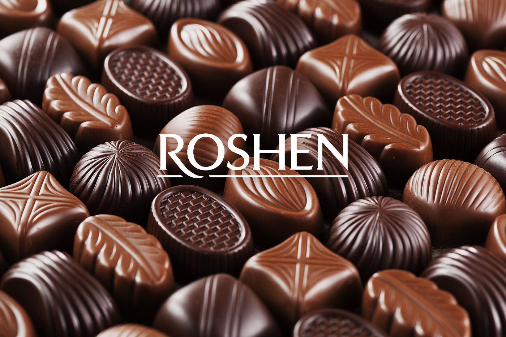

Київська кондитерська фабрика — найстаріше підприємство мережі (ведде свою історію ще з 1886 року як Деміївська парова фабрика). Спеціалізується на виробництві шоколадних виробів, цукерок і знаменитих тортів (зокрема, легендарного «Київського торта»).
Вінницькі кондитерські фабрики — одні з найпотужніших та найсучасніших підприємств корпорації, що випускають широкий асортимент цукерок, карамелі, бісквітів і шоколаду.
Кременчуцька кондитерська фабрика — спеціалізується переважно на виробництві карамельних виробів (різноманітних льодяників, цукерок із начинками тощо).
Бісквітний комплекс у Борисполі — сучасне високотехнологічне підприємство, введене в експлуатацію наприкінці 2010-х років для виробництва печива, бісквітів та вафельної продукції.
Вінницький молочний завод «РОШЕН» — високотехнологічне підприємство, яке забезпечує виробництва якісною молочною сировиною (масло, молоко тощо).
Міжнародні активи: Литовська фабрика Roshen Klaipėda (спеціалізується на карамелі) та партнерство з підприємством Bonbonetti в Угорщині.
